Вопросы стабильности и испорченные файлы в Visio 2003.
Вопросы стабильности и испорченные файлы в Visio 2003.
Возможно однажды, как всегда, открыв какой-то файл, программа Visio сообщит, что файл поврежден или это не Visio файл вообще, хотя вчера ничего не предвещало такого поведения. А чертеж, по закону подлости, надо сдавать завтра, а этот Visio взял и испортил его.
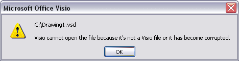
Для таких случаев и надо разобраться что случилось, что делать и как не допускать таких ситуаций впредь.
Какие бывают причины испорченных файлов?
- Битые – достаточно образное выражение, характеризующее незначительные ошибки в самом файле Visio, но которые критичны для текущей версии Visio. Процент открытия в Visio более новых версий около 80%. Иногда встречаются случаи невозможности последующего сохранения в Visio формат. Но хотя бы можно скопировать информацию. Процент возникновения данных ошибок около 1-2%. Часто возникают из-за невозможности программы корректно сохранить и затем воспроизвести какой-то объект.
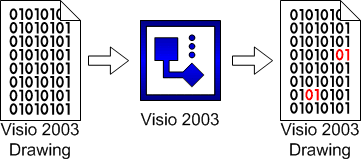
- Файлы, которые были созданы в старых версиях Visio, особенно используя шаблон, потом в них вносились изменения в более поздних версиях Visio, копировались объекты, опять же, старых версий, добавлялись объекты из новых версий, и получается, некоторая «солянка» на старом шаблоне, которую как-то надо сохранить программе, и затем, воспроизвести. Процент возникновения ошибок, причем критических, очень велик. Вернее прямо пропорционален количеству «инородных», для текущей версии Visio, объектов.
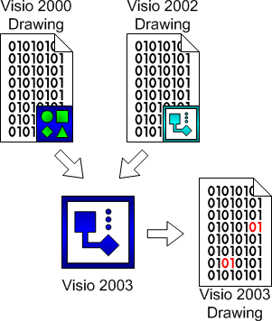
Не стоит также исключать возможности появления и дальнейшего накопления некритических ошибок, т.е. ошибок, которые либо, впоследствии, исправляются самой программой, либо появляются в «неиспользуемых» данных. Ну, допустим, изменилась одна буква в описании. Пользователь об этом никогда, возможно, и не узнает, но ошибки достаточно часто появляются.
Какие бывают испорченные файлы по содержанию?
Если открыть испорченный файл в любом HEX-редакторе, то можно увидеть его структуру и организацию данных. Соответственно, по этому содержанию испорченные файлы тоже можно разделить на:
- Битые. Непрерывность данных такого файла сохранена полностью, но некорректно. Вероятность открытия высока.
- Файлы, у которых отсутствую некоторые блоки в непрерывности данных. Редко возможно восстановление.
- Файлы, у которых отсутствует более 20% данных, либо вообще, нет либо начала, либо половины данных файла. Не подлежат восстановлению.
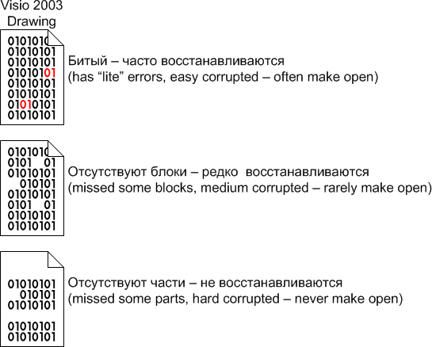
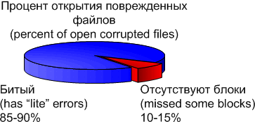
Как повысить стабильность.
Тут следует исходить из задачи, которая ставится.
- Использовать, по возможности примитивы. Поясню: 10 000 прямоугольников, нарисованных самим пользователем, практически со 100% вероятностью будут записаны программой в файл и затем открыты, что вполне логично. А вот 10 000 разных объектов из разных приложений не всегда корректно программа сможет «переварить» и потом нормально открыть и примеров тому масса.
- Использовать возможность Автосохранения. Но не как универсальное решение проблемы, а как еще один инструмент, который впоследствии снизит потери данных. Просто если поставить время сохранения 1 минуту, то ничего хорошего это не принесет, т.к. каждую минуту придется наблюдать окно Автосохранения, что в больших чертежах может составлять до половины этой же минуты. Рекомендую выставить на значение, которое просто не раздражает. По умолчанию оно стоит на 20 минут. В принципе данной периодичности достаточно, чтобы Автосохранение не маячило перед глазами.
- По возможности использовать «оригинальные» фигуры, той версии Visio, в которой сохраняется файл.
- Использовать свои макросы. Как ни странно это звучит, но на объекты из ранних версий Visio очень плохо действую макросы из более поздних версий, т.к. макрос, написанный лично, обычно, не делает «лишних» действий, помимо тех для которых он и предназначался. Оригинальные макросы очень любят добавить большое количество дополнительной информации. Я не призываю полностью отказаться от макросов или как-то ограничить их применение, но я лично, всегда, перед тем как применить надстройку, сохраняю файл, так, на всякий случай. И несколько раз это очень помогало.
- Работать с файлом в одной версии Visio. Причем даже с одинаковой версией файлов самой программы. Неоднократно приходилось сталкиваться с тем, что файлы созданные в Visio 2003, редактированные в Visio 2003 SP1 потом не открывались в Visio 2003, хотя вполне нормально открывались в Visio 2003 SP1.
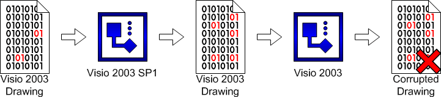
- Ну и соответственно желательно устанавливать все обновления для программы. Не текущие, но хотя бы Service Pack’и. И вот почему, бывает, не часто, что текущие обновления вносят нестабильность, т.к. конфигурация обновлений у всех разная, и все предусмотреть нельзя. А вот Service Pack’и отличаются более-менее стабильностью, ввиду конкретного списка включенных в них обновлений.
Если вы столкнулись с тем, что Visio рухнул и чего делать.
Сама программа предложит восстановить файл, но на самом деле она просто откроет последний файл Автосохранения с диска по адресу С:\Documents and Settings\Имя_пользователя\Local Settings\Temp. Обычно файлы Visio в этой папке называются примерно так: ~$1VSO390.vsd.
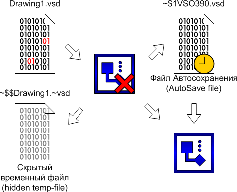
Можно самому взять оттуда последнюю версию сохраненного файла.
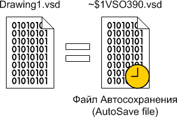
Попробовать повторно открыть исходный файл на диске, но предварительно скопировав его в другое место. Поясню: при открытии файла Visio программой создается временный файл в той же папке, что и исходный, но скрытый. И когда программа будет открывать файл, то она автоматически будет пытаться внести изменения, записанные во временный файл, который тоже может быть поврежден.
Даже если новый файл не был сохранен пользователем ни разу, но было произведено Автосохранение программой и файл был закрыт без сохранения, то его в этом случае тоже можно восстановить. Можно также восстановить и испорченный файл, т.к. при сохранении файла, файл Автосохранения был удален, но физически остался на диске. Вот его-то и можно восстановить. Существуют программа, которая умеет искать Visio файлы на диске, если они были удалены из корзины.
Программа называется Office DocumentsRescue Professional.
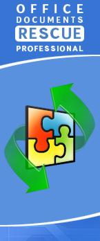
Сайт данной программы: www.objectrescue.com
На примере данной программы и проведем эксперимент.
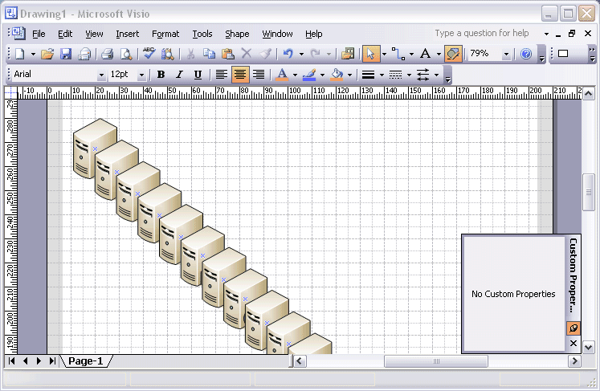
Для начала создадим новый документ, поместим ненулевое количество фигур и выставив малое время Автосохранения, дождемся первой точки Автосохранения и проверим, что файл был создан (С:\Documents and Settings\Имя_пользователя\Local Settings\Temp).

Закрываем файл Visio и отвечаем НЕТ на предложение сохранить данный файл.
Итак, у нас есть файл Автосохранения на диске и он был стерт программой.
Открываем программу Office DocumentsRescue Professional.
Шаг 1 из 9. Указываем диск, на котором находится данная папка для временных файлов.
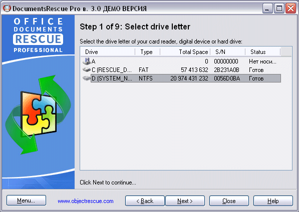
Шаг 2 из 9. Отмечаем файлы для восстановления.
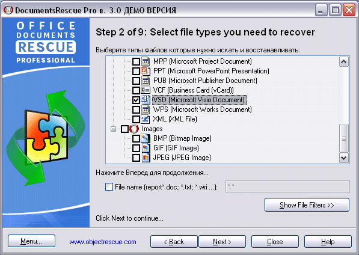
Шаг 3 из 9. Процесс заканчивается, и показывается найденные файлы.

Просматриваем данные файлы и видим, что один из них, как раз тот файл, который программа сохранила как точку Автосохранения.
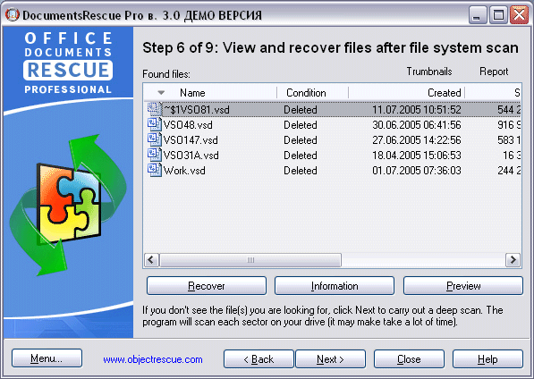
Соответственно, конечным результатом стало восстановление файла, который не был сохранен пользователем.
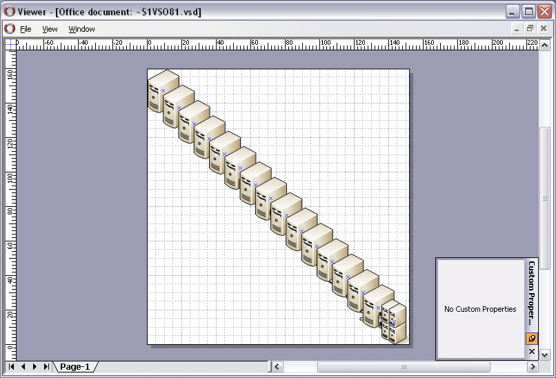
Соответственно если попробовать просканировать все диски, то можно найти файлы удаленые программой, которые когда-то были потеряны или случайно стерты, или при аварийном завершении программы были стерты или не подлежали восстановлению.
Внимание! Демо-версия программы не позволяет пользователю восстановить файлы. Только просмотреть.
При всех вышеперечисленных советах нельзя гарантировать, что теперь Visio всегда будет работать как часы, но можно уменьшить вероятность возникновения ошибок, а при возникновении проблем, знать что делать и где искать.
Также прошу заметить, что данная программа не является уникальной, а была взята первой из целого класса программ по восстановлению данных. Просто обратил внимание, что написано про восстановление VSD файлов и решил попробовать.
Статьи: 1 2 3 4 5 6 7 8 9 10 11 12 13 14 15 16 17 18 19 20 21 22 23 24 25 26 27 28 29 30
В начало раздела
Автор: Ничков Алексей (a.k.a. Digitall)